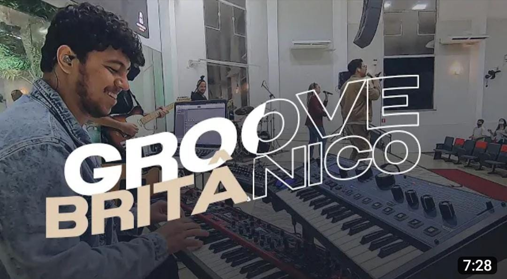

Top 5 vídeos do Filipe Martins
5º - MEDLEY YEHOVAH/ TE AGRADEÇO

4º - É DE CORAÇÃO
3º - Não Tenhas Sobre Ti - PC Baruk
2º - CORINHO DE FOGO EM GROOVE - NT PRAISE
1º - Ericka Nascimento - Senhor Tu És Bom